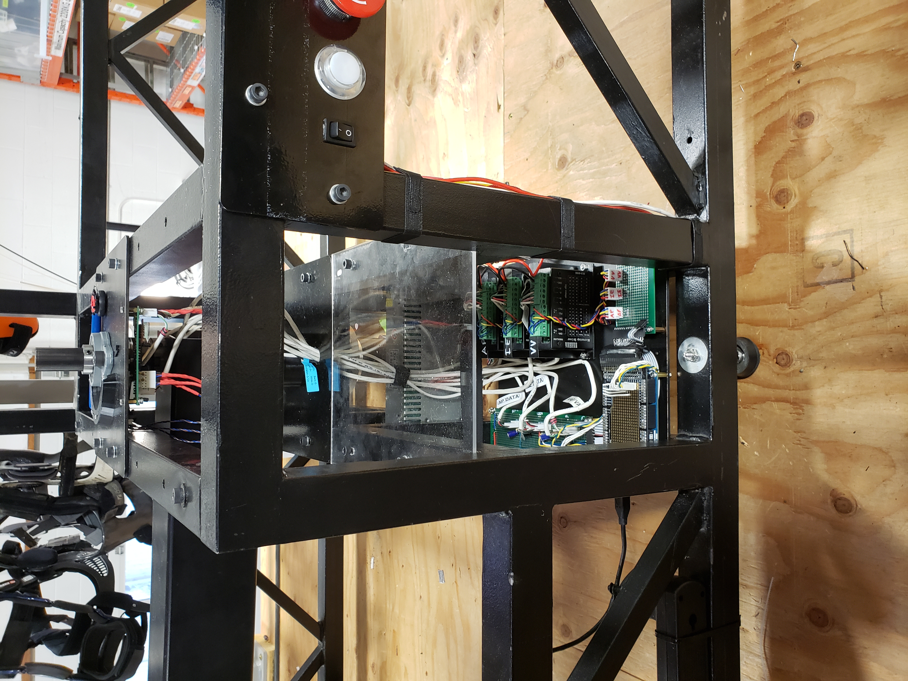
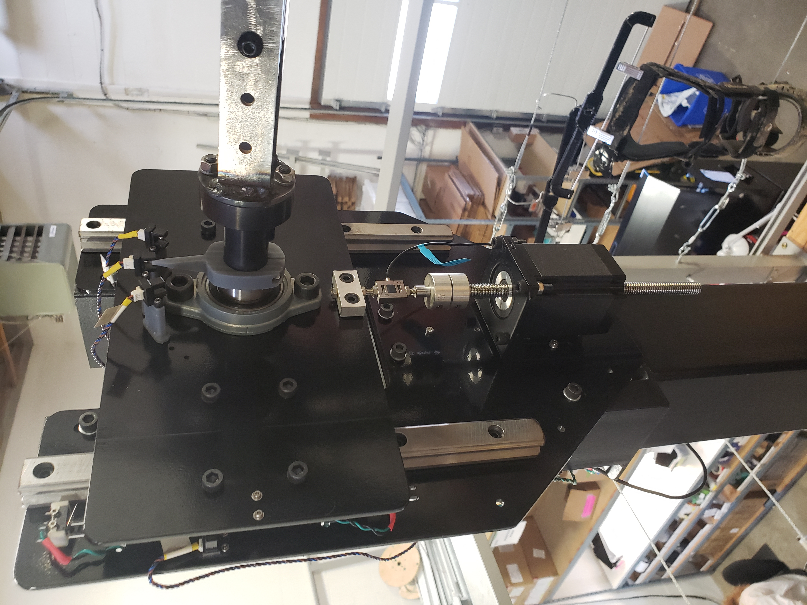
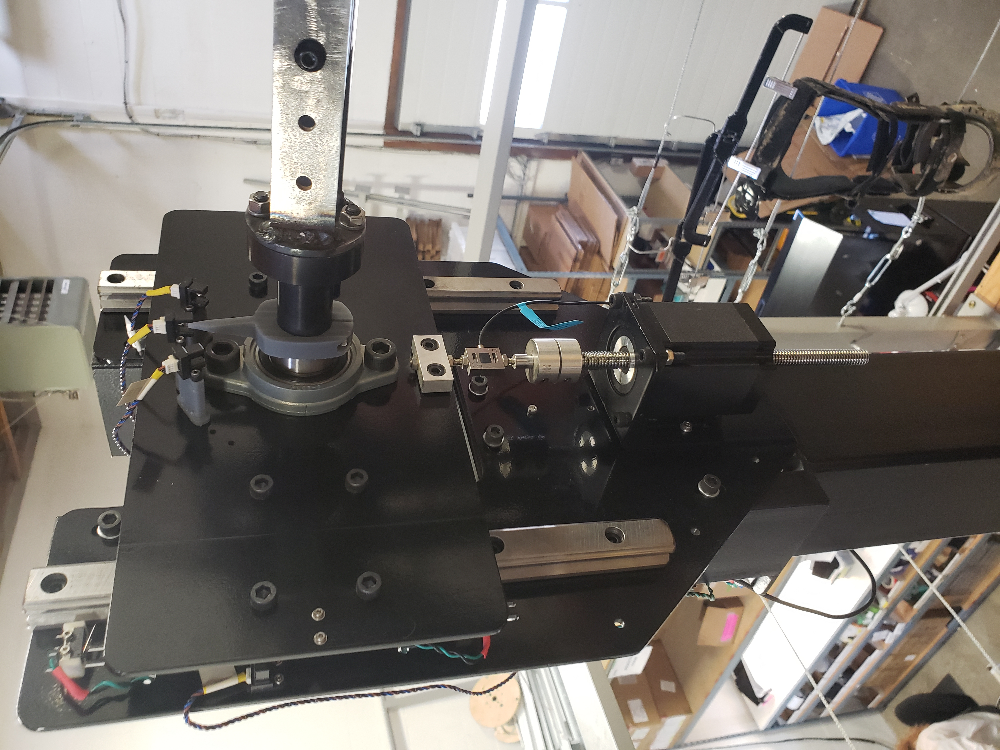
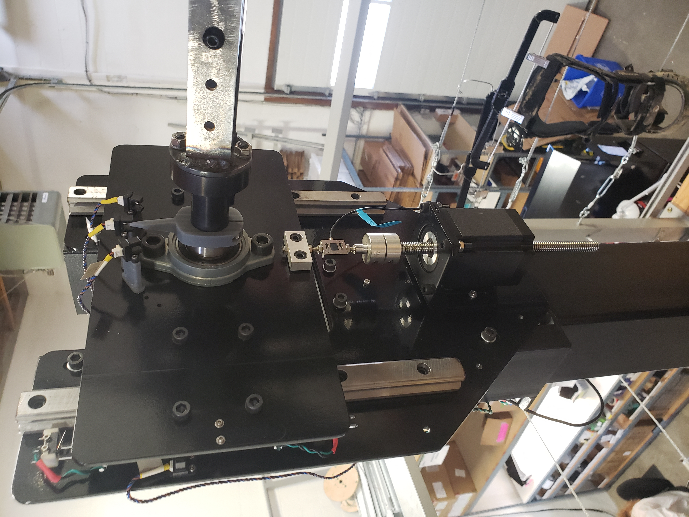
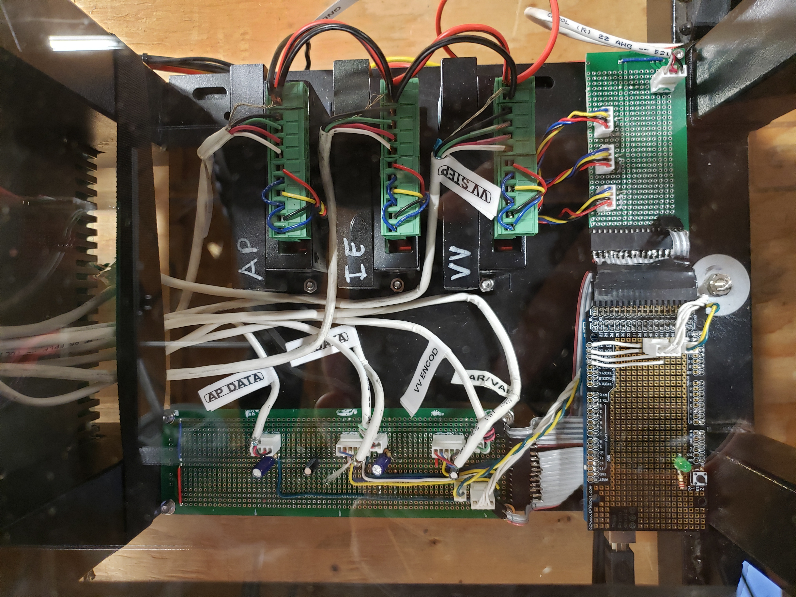
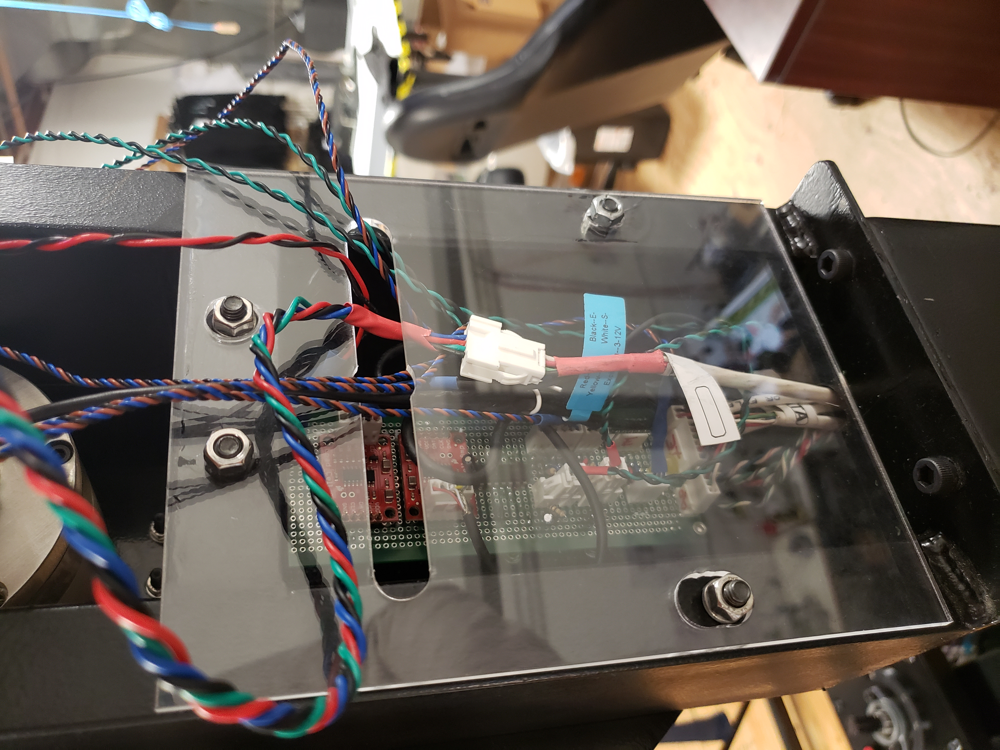
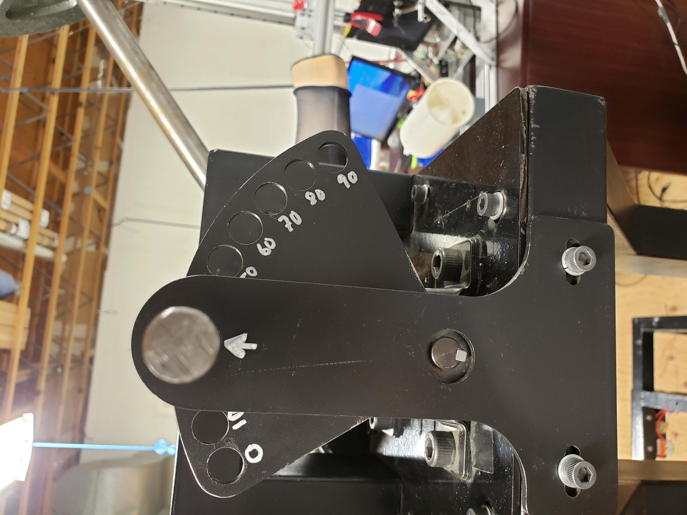
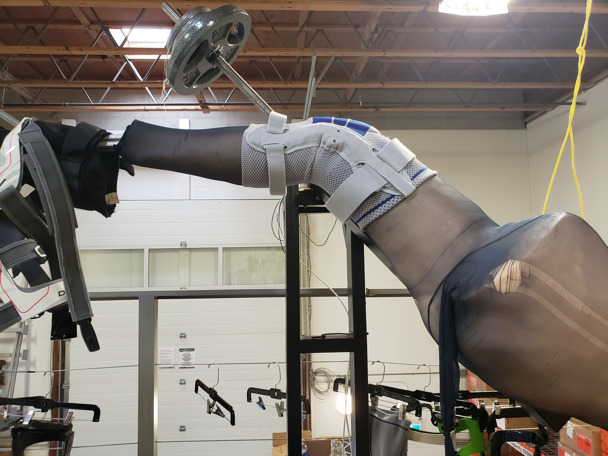
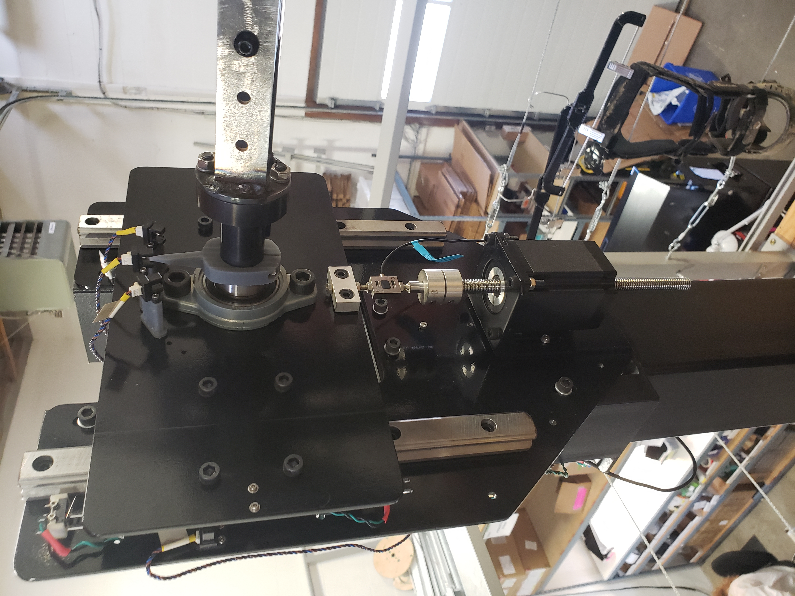

 







The KTF is a custom test fixture, designed and built by various Co-ops over the years at Stoko.
It is a multi-axis machine capable of applying and measuring the load applied to a knee simulacrum. It was designed to test the actual load reduction caused by wearing a knee brace when your leg is loaded in
each of the 8 "cardinal" knee directions (Varus Valgus, Anterior, Posterior, Internal External Rotation, and Flexion Extension),
I was hired to fix the machine, as it had been in an inoperable state for more than 6 months before my start. Over my 8 months at Stoko, I completely overhauled the machine; I rebuilt the electronics, added mechanical upgrades
and built an app from scratch to operate the machine. My goal was to create a bug-free, easy-to-operate system that would last long after I left the company.
It was incredible to work on a system from scratch, the freedom to establish convention and create communication channels between different subsystems taught me a lot. Creating the app was an exercise in breaking down
a complex and diverse problem into modular chunks, attempting to find a balance between being able to operate the machine simply, while still being free to create settings for a huge variety of tests.
